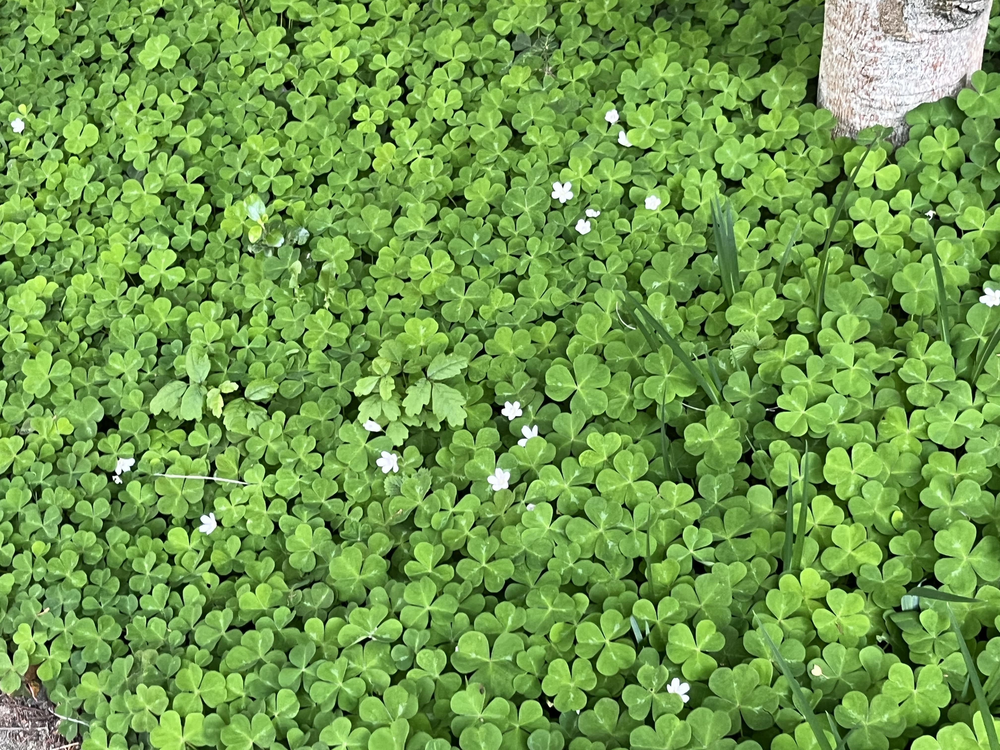

Experiment 2 - Living Impressions

Description
In this experiment I was trying to recreate a field of clovers, a picture of which I got as reference above.
Technical
The program works by using a function I created to render the shape of a clover leaf, which it then uses to create a full clover and then an array of clovers with random initial rotations, stored in a class, with their colors and rotation updating over time.
Reflection
I found this experiment really satisfying and relaxing to get to a point where it started to feel like a field of clovers moving in the wind. If I had given myself more time to work on it I would have liked to put in some more details such as procedurally generated grass in-between the clovers and perhaps the trunk of a tree.